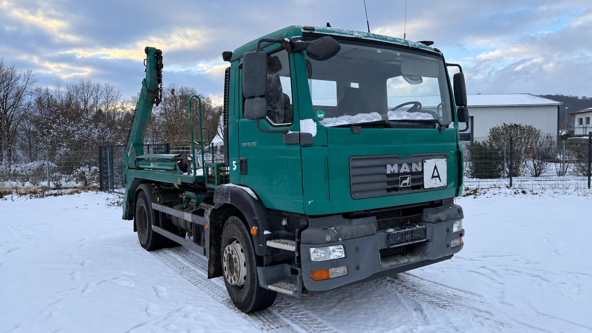
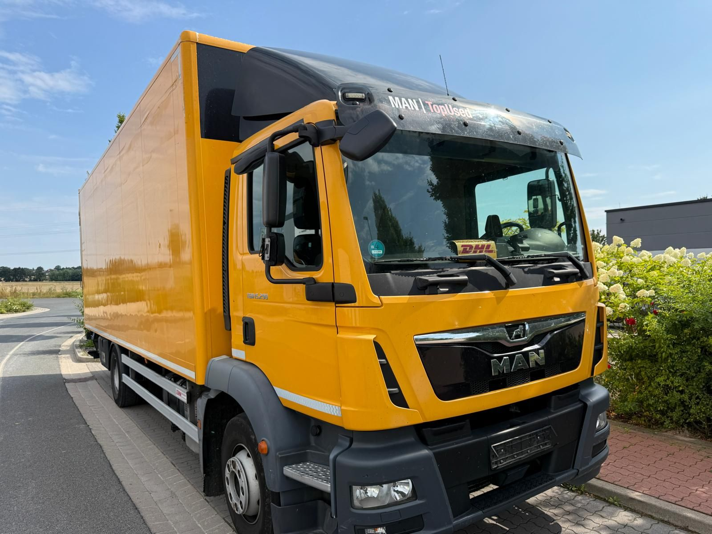

Der 12-Tonner ist die Klasse zwischen dem 7,5-Tonner und dem schweren LKW. Er trägt deutlich mehr als ein 7,5-Tonner, bleibt aber wendig genug für Innenstädte, Gewerbegebiete und enge Höfe. Getränkehandel, Baustoffhandel, Paketdienste, Möbelspeditionen und Kommunen setzen ihn ein. Bei MAN heißt dieses Fahrzeug meist TGL, manchmal auch TGM.
Uns werden regelmäßig MAN 12-Tonner zum Ankauf angeboten, oft mit der Frage, was die Zahlen und Buchstaben auf der Tür bedeuten. Hier erklären wir es, dazu die Unterschiede zwischen TGL und TGM und die Generationen seit 2005.
TGL oder TGM: Wo liegt der Unterschied?
MAN teilt seine leichten und mittleren LKW in zwei Baureihen:
- TGL: 7,5 bis 12 Tonnen, nur mit zwei Achsen und Hinterradantrieb (4x2), mit Vier- oder Sechszylinder
- TGM: 12 bis 26 Tonnen, mit Sechszylinder, neben 4x2 auch als 6x2, 6x4 und mit Allradantrieb (4x4)
Bei 12 Tonnen treffen sich beide Baureihen. Der TGL ist für den Verteilerverkehr gebaut: Koffer, Plane, Pritsche, Kühlaufbau, viele Stopps am Tag. Der TGM ist robuster ausgelegt und kommt eher dort zum Einsatz, wo es schwerer zugeht: auf dem Bau, bei Kommunen und bei der Feuerwehr. Ein 12-Tonner mit Allradantrieb ist deshalb fast immer ein TGM.

Was bedeutet TGL 12.250 4x2 BL?
Die Typenbezeichnung bei MAN ist eine Kurzbeschreibung des Fahrzeugs und folgt immer demselben Schema:
- TGL: die Baureihe
- 12: das zulässige Gesamtgewicht in Tonnen, gerundet
- 250: die Motorleistung in PS
- 4x2: Anzahl der Räder insgesamt mal Anzahl der angetriebenen Räder. 4x2 heißt zwei Achsen, eine davon angetrieben.
- BL: die Federung, vorne und hinten. B steht für Blattfedern, L für Luftfederung. BL heißt also Blattfedern vorne, Luftfederung hinten. Daneben gibt es BB und LL.
Ein TGL 12.180 hat demnach rund 12 Tonnen und 180 PS, ein TGM 12.290 rund 12 Tonnen und 290 PS. Die genauen Werte stehen in der Zulassungsbescheinigung Teil I.

Die Federung ist für den Einsatz wichtiger, als sie aussieht. Mit Luftfederung hinten lässt sich die Ladefläche absenken und anheben. Das hilft an Laderampen und beim Wechsel von Aufbauten. Für Koffer-LKW im Verteilerverkehr ist BL deshalb sehr verbreitet.
Die Generationen seit 2005
- 2005 bis 2012: erste Baureihe, je nach Baujahr Euro 3 bis Euro 5 oder EEV
- 2012 bis 2020: überarbeitete Baureihe mit Euro 6
- seit 2020: neue Truck-Generation
2005: TGL und TGM lösen L2000 und M2000 ab
MAN stellte den TGL im Frühjahr 2005 vor, kurz darauf folgte der TGM. Beide ersetzten die bewährten Baureihen L2000 und M2000. Das Fahrerhaus leitete sich vom schweren TGA ab. Den TGL gab es zum Start in den Gewichtsklassen 7,49, 8, 10 und 12 Tonnen. Die Motoren kamen aus der Baureihe D08, als Vier- und als Sechszylinder.
2012: Euro 6 und neuer Innenraum
2012 stellte MAN die Euro-6-Versionen von TGL und TGM vor. Der TGL kam mit 150 bis 250 PS, der TGM mit 250 bis 341 PS. Von außen erkennt man diese Fahrzeuge an der tiefer gezogenen Frontklappe und den offen liegenden Scheibenwischern, innen an einem neuen Armaturenbrett und einer neuen Bedienung für Heizung und Klimaanlage (eurotransport). Ab 2014 durften neue LKW in der EU ohnehin nur noch mit Euro 6 zugelassen werden.
Seit 2020: Die neue MAN-Truck-Generation
Im Februar 2020 zeigte MAN in Bilbao die neue Generation von TGL, TGM, TGS und TGX. TGL und TGM bekamen vier neue, schmale Fahrerhäuser: kurz, lang, lang mit Hochdach und Liege sowie eine Doppelkabine mit bis zu sieben Sitzplätzen. Der TGL hat seitdem einen Vierzylinder mit 160 bis 220 PS oder einen Sechszylinder mit 250 PS, der TGM bis zu 320 PS (transport-online).
Woran Sie die Generation erkennen: Am sichersten mit Erstzulassung und Emissionsklasse aus dem Fahrzeugschein. Euro 3 bis Euro 5 oder EEV bedeutet in der Regel die erste Baureihe, Euro 6 mit Erstzulassung vor 2020 die überarbeitete, ab 2020 meist die neue Generation.
Warum so viele 12-Tonner 11,99 Tonnen haben
Wer gebrauchte 12-Tonner vergleicht, sieht im Fahrzeugschein sehr oft 11,99 Tonnen. Bei MAN genauso wie beim Mercedes-Benz Atego. Der Grund liegt in der Maut.
Als die LKW-Maut 2005 startete, galt sie erst ab 12 Tonnen. Ein LKW mit 11,99 Tonnen war mautfrei. Viele Flotten haben ihre Fahrzeuge deshalb genau so bestellt. Zum 1. Oktober 2015 wurde die Grenze auf 7,5 Tonnen gesenkt, zum 1. Juli 2024 auf mehr als 3,5 Tonnen (Bundesministerium für Verkehr).
Der Vorteil von 11,99 Tonnen ist damit weg. Die Fahrzeuge aus dieser Zeit sind aber noch da und machen einen großen Teil des Gebrauchtmarkts aus. Für den Führerschein gilt übrigens: Alles über 7,5 Tonnen braucht die Klasse C. Mit C1 darf man keinen 12-Tonner fahren.
Was ist ein gebrauchter MAN 12-Tonner wert?
Meist weniger, als der Verkäufer zuerst denkt. Das liegt nicht am Fahrzeug, sondern am Markt:
- Viele gleiche Fahrzeuge. Verteilerflotten und Vermieter kaufen 12-Tonner in großer Stückzahl und geben sie nach festen Laufzeiten wieder ab. Auf dem Gebrauchtmarkt stehen deshalb viele sehr ähnliche Fahrzeuge nebeneinander.
- Die Maut. Seit 2015 zahlt auch der 12-Tonner Maut, und die Höhe hängt von Schadstoff- und CO2-Klasse ab. Je älter die Abgasnorm, desto teurer jeder Kilometer. Das senkt die Nachfrage nach älteren Fahrzeugen im Inland.
- Die Innenstädte. 12-Tonner fahren dort, wo es Umweltzonen gibt. Ohne grüne Plakette ist ein Verteiler-LKW in vielen Städten kaum einsetzbar.
- Der Aufbau. Koffer mit Ladebordwand, Kühlkoffer, Plane, Kipper oder Absetzkipper: Jeder Aufbau hat seinen eigenen, oft kleinen Käuferkreis.
- Wunschpreise. Die Preise in Online-Börsen sind Angebote, keine Ergebnisse. Was am Ende tatsächlich gezahlt wird, liegt meist darunter.

Verkaufen lohnt sich trotzdem. Ein 12-Tonner, der nicht mehr eingesetzt wird, kostet Steuer, Versicherung und Stellplatz und wird mit jedem Monat älter. Wer früh verkauft, hat die besseren Karten.
Wir kaufen MAN TGL und TGM an
Die ECS Exclusive Commerce Services GmbH aus Gehrden bei Hannover kauft MAN TGL und TGM an, aus allen Generationen und mit jedem Aufbau. Ob ein einzelner 12-Tonner oder ein ganzer Fuhrpark, ob Verteiler-LKW oder Kommunalfahrzeug. Weil wir Nutzfahrzeuge auch exportieren, finden wir oft auch für ältere Baujahre einen Käufer.
So läuft es ab:
- Sie rufen uns an, schreiben per WhatsApp oder senden eine E-Mail.
- Sie nennen uns Typ, Erstzulassung, Kilometerstand, Aufbau und Standort und schicken ein paar Fotos.
- Wir machen Ihnen ein konkretes Angebot.
- Nach Ihrer Zusage erstellen wir den Kaufvertrag und schließen das Geschäft ab.
- Wir holen das Fahrzeug ab, deutschlandweit.
Mehr zum Ablauf lesen Sie unter Unsere Arbeit, alle Fahrzeugtypen, die wir ankaufen, unter Was wir ankaufen. Sie möchten Ihren MAN 12-Tonner verkaufen? Schreiben Sie uns oder rufen Sie an.
Hinweis: Dieser Beitrag dient der allgemeinen Information und ersetzt keine Rechts- oder Steuerberatung. Alle Angaben ohne Gewähr, Stand: 2. November 2026. Genannte Marken und Modellbezeichnungen gehören ihren jeweiligen Inhabern. Die ECS GmbH ist ein unabhängiger Händler und steht in keiner Verbindung zu den Herstellern.